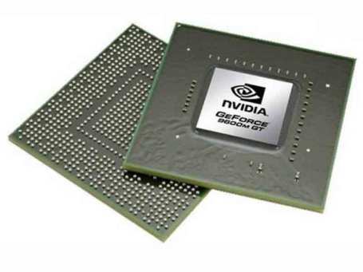
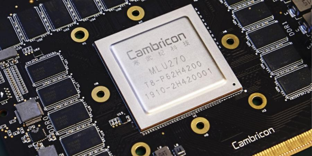
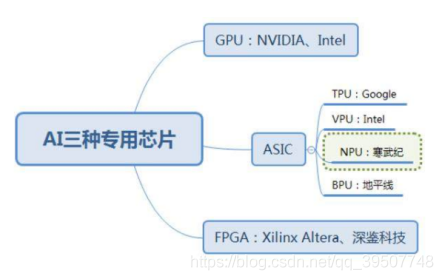
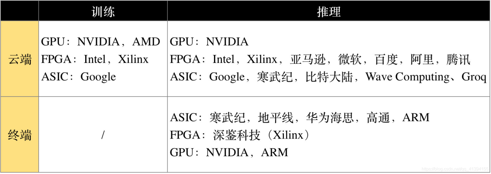
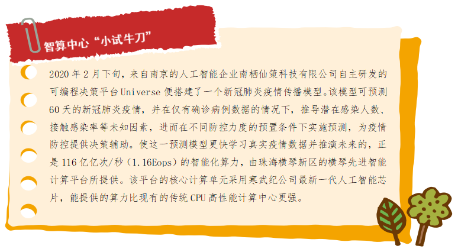

任务一 人工智能技术基础支撑：算力
【任务描述】
2016年，世界顶级围棋高手李世石与AI围棋对决，最后竟以1:4惨败于谷歌AlphaGO。人工智能凭什么能够战胜人类？答案是AI背后的超级计算机算力，当时的ALphaGo消耗了176个GPU和1202个CPU的计算资源。这些功能强大的计算机在人工智能技术飞速发展的今天具有不可或缺的作用。AI通过算力处理大量的相关数据，并以神经网络不断学习成长，最终获得技能，战胜人类选手。算力究竟有多重要？中国工程院院士、浪潮集团首席科学家王恩东认为“人类社会已经快速步入到智慧时代，计算力是这个时代的核心驱动力、生产力。”
【任务实施】
1.1什么是人工智能的算力？
算力，也称作计算力，就是设备的计算能力，也是数据处理的能力。AI的许多数据处理涉及矩阵乘法和加法。不管是图像识别等领域常用的CNN算法，还是语音识别、自然语言处理等领域的RNN算法，本质上都是矩阵或vector的乘法、加法，然后配合一些除法、指数等算法。CPU可以拿来执行AI算法，但因为内部有大量其他逻辑，而这些逻辑对于目前的AI算法来说是完全用不上的，所以CPU并不能达到最优的性价比。因此，具有海量并行计算能力、能够加速AI计算的AI芯片应运而生。
以4GHz 128bit的POWER8的CPU为例，假设是处理16bit的数据，该CPU理论上每秒可以完成16X4G=64G次。再以大名鼎鼎的谷歌的TPU1为例，主频为700M Hz，有256X256=64K个乘加单元，每个时间单元可同时执行一个乘法和一个加法。那就是128K个操作。该YPU论述每秒可完成=128K X 700MHz=89600G=大约90T次。可以看出在AI算法处理上，AI芯片比CPU快1000倍。如果训练一个模型，TPU处理1个小时，放在CPU上则要41天。简而言之，人工智能的算力主要取决于芯片。
1.2 AI芯片
从广义范畴上讲，面向AI计算应用的芯片都可以称为AI芯片。狭义上指专门针对AI算法做了特殊加速设计的芯片，以GPU、FPGA、ASIC为代表的AI芯片，基于传统芯片架构对某类特定算法或者场景进行AI计算加速的芯片，是目前可大规模商用的技术路线。
GPU（Graphics Processing Unit），即图形处理器，是一种由大量核心组成的大规模并行计算架构，专为同时处理多重任务而设计。良好的矩阵计算能力和并行计算优势，最早被用于AI计算，在数据中心中获得大量应用。GPU采用并行架构，超过80%部分为运算单元，具备较高性能运算速度。相比较下，CPU仅有20%为运算单元，更多的是逻辑单元，因此CPU擅长逻辑控制与串行运算，而GPU擅长大规模并行运算，但是GPU无法单独工作，必须由CPU进行控制调用才能工作。GPU目前是最主流的通用性AI芯片。在通用性芯片领域，除了英特尔和AMD的CPU外，美国的英伟达公司（Nvidia）是行业龙头，几乎垄断了人工智能的GPU市场。

FPGA（Field-Programmable Gate Array），即现场可编程门阵列，作为专用集成电路领域中的一种半定制电路出现，适用于多指令，单数据流的分析，与GPU相反，因此常用于推理阶段。FPGA灵活性较好、处理简单指令重复计算比较强，用在云计算架构形成CPU+FPGA的混合异构中相比GPU更加的低功效和高性能，适用于高密度计算，在深度学习的推理阶段有着更高的效率和更低的成本。国外包括亚马逊、微软都推出了基于FPGA的云计算服务，国内包括腾讯云、阿里云早在2017年推出了基于FPGA的服务，百度大脑也使用了FPGA芯片，被Xilinx收购的深鉴科技也是基于FPGA来设计深度学习的加速器架构来灵活扩展用于服务器端和嵌入式端。

ASIC（Application Specific Integrated Circuits），即专用集成电路，是一种为专用目的设计的，面向特定用户需求的定制芯片。与GPU和FPGA不同，GPU和FPGA除了是一种技术路线之外，还是实实在在的确定的产品，而ASIC就是一种技术路线或者方案，其呈现出的最终形态与功能也是多种多样的。近年来涌现出的类似TPU、NPU、VPU、BPU等令人眼花缭乱的各种芯片，本质上都属于ASIC。ASIC不同于 GPU 和 FPGA 的灵活性，定制化的 ASIC 一旦制造完成将不能更改，所以初期成本高、开发周期长的使得进入门槛高。目前，大多是具备 AI 算法又擅长芯片研发的巨头参与，如 Google 的 TPU。由于完美适用于神经网络相关算法，ASIC 在性能和功耗上都要优于 GPU 和 FPGA，TPU1 是传统 GPU 性能的 14-16 倍，NPU 是 GPU 的 118 倍。

除了以上已经达到商用规模的AI芯片，还有比较前沿性的研究，例如类脑芯片、可重构通用AI芯片等。类脑芯片在架构上直接通过模仿大脑结构进行神经拟态计算，完全开辟了另一条实现人工智能的道路，而不是作为人工神经网络或深度学习的加速器存在、目前该类芯片还只是小规模研究与应用，代表产品有IBM的TrueNorth和清华大学的“芯机”系列芯片。可重构通用AI芯片遵循软件定义芯片思想，可重构计算技术允许硬件架构和功能随软件变化而变化，兼具处理器的通用性和ASIC的高性能和低功耗，是实现软件定义芯片的核心，被公认为是突破性的下一代集成电路技术。清华大学微电子学研究所设计的AI芯片Thinker，采用可重构计算架构，能够支持卷积神经网络、全连接神经网络和递归神经网络等多种AI算法。
超级计算机是目前世界上功能最强大的计算机。与普通的个人计算机不同，超级计算机的最终竞争指标之一是计算能力，超级计算机前10名中，当前两个功能最强大的超级计算机都来自美国，在前十名中，美国排名第五，中国排名第二。我国的神威“太湖之光”超级计算机排名是世界第三，全部使用具有中国自主知识产权的芯片。
1.3 AI芯片应用
AI芯片部署的位置有两种：云端、终端。云端，即数据中心，在深度学习的训练阶段需要极大的数据量和大运算量，单一处理器无法独立完成，因此训练环节只能在云端实现。终端，即手机、安防摄像头、汽车、智能家居设备、各种IoT设备等执行边缘计算的智能设备。根据部署位置，可以分为云AI芯片和端AI芯片。
AI的实现包括两个环节：训练、推理。训练，是指通过大数据训练出一个复杂的神经网络模型，即用大量标记过的数据来“训练”相应的系统，使之可以适应特定的功能。训练需要极高的计算性能，需要较高的精度，需要能处理海量的数据，需要有一定的通用性，以便完成各种各样的学习任务。推理，是指利用训练好的模型，使用新数据推理出各种结论。即借助现有神经网络模型进行运算， 利用新的输入数据来一次性获得正确结论的过程。也有叫做预测或推断。所以根据承担任务的不同，AI芯片可以分为：用于构建神经网络模型的训练芯片，利用神经网络模型进行推理预测的推理芯片。

1.4智算中心，赋能产业AI化
随着数据总量的增长和智能化社会构建需求的扩大，人工智能产业对算力的要求越来越高。中国工程院院士、浪潮集团首席科学家王恩东认为，在新基建各大领域之中，相比云计算和大数据，人工智能对算力的需求几乎是“无止境”的。根据人工智能研究组织Open AI统计，从2012年至2019年，随着人工智能深度学习“大深多”模型的演进，模型计算所需计算量已增长30万倍。斯坦福大学发布的《AI Index 2019》报告也显示，2012年以后，算力需求每三四个月就翻一番，现有算力面临捉襟见肘的局面。只有通过超级计算机的研究和开发，我们才有机会成为全球人工智能研究中心，中国也进入了人工智能领域的第一梯队。随着新基建的加速建设，人工智能与大数据、云计算、物联网等融合也会进一步加快，智慧医疗、无人驾驶、智慧城市、智慧金融等应用场景，背后都需要算力支撑。“如果算力不能快速提升，那我们将不得不面临一个糟糕的局面：当规模庞大的数据用于人工智能的训练学习时，数据量将超出内存和处理器的承载上限，整个训练过程将变得无比漫长，甚至完全无法实现最基本的人工智能。”浪潮集团人工智能和高性能计算部总经理刘军说。事实上算力成本是人工智能企业发展的一大阻碍，企业花钱买定制化算力、建计算中心，会造成一定程度上的资源浪费，且单靠部分企业建设的计算中心适用面有限，将智能计算中心作为转型升级的基础设施投资，更能满足产业智能化发展需要。
近年已有不少超算中心运用人工智能芯片和服务器来强化其算力，提升对人工智能产业的服务能力，简单来说，这一路径是对传统超算中心“AI化”。比如在西北，2019年，西安的沣东新城搭建了西北地区首个人工智能领域的新型基础设施——沣东人工智能计算创新中心。在粤港澳大湾区，由中科院、广东省、珠海市、横琴新区共同建设的横琴先进智能计算平台也是一例。这一项目也是粤港澳大湾区首个先进智能计算平台，被列入广东省政府2019年工作报告，并纳入了广东省委、省政府印发的《关于贯彻落实“粤港澳大湾区发展规划纲要”的实施意见》。

2020年4月20日，国家发改委首次明确新型基础设施的范围，新型基础设施主要包括三个方面内容： 一是信息基础设施;二是融合基础设施;三是创新基础设施。其中，信息基础设施主要是指基于新一代信息技术演化生成的基础设施，比如，以5G、物联网、工业互联网、卫星互联网为代表的通信网络基础设施，以人工智能、云计算、区块链等为代表的新技术基础设施，以数据中心、智能计算中心为代表的算力基础设施等。智能计算中心明确被纳入了新基建的范围中。 2020年11月17日，国家信息中心信息化和产业发展部联合浪潮发布了《智能计算中心规划建设指南》。《指南》对智能计算中心的规划建设给出了清晰的指导，并对智能计算中心进行明确定义：智能计算中心是基于最新人工智能理论，采用领先的人工智能计算架构，提供人工智能应用所需算力服务、数据服务和算法服务的公共算力新型基础设施，通过算力的生产、聚合、调度和释放，高效支撑数据开放共享、智能生态建设、产业创新聚集，有力促进AI产业化、产业AI化及政府治理智能化。
【任务拓展】
阅读2018年以来的“中国AI算力报告”，了解我国区域算力分布，算力TOP10有你所在的城市或地区吗？你觉得那些排名有上升的城市是因为什么原因呢？